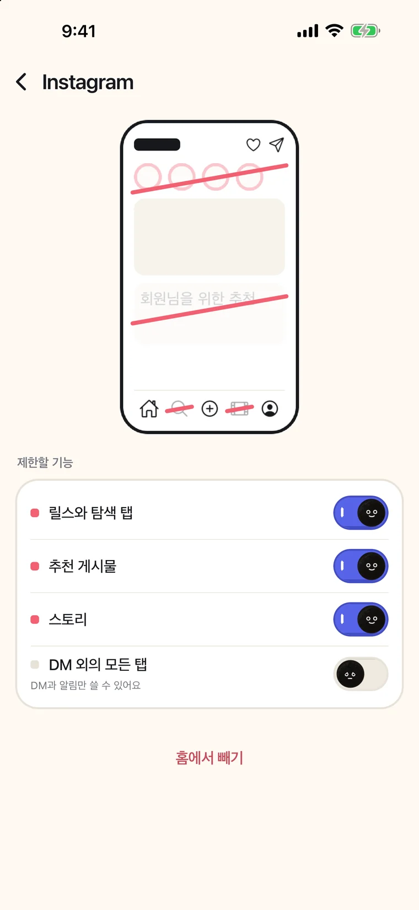
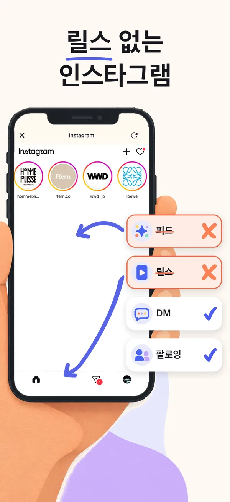

SocialLite는 무료예요?
아니요. SocialLite는 무료로 내려받을 수 있지만 공식 FAQ에 따르면 새로 가입하는 사용자는 유료 구독이 있어야 쓸 수 있고, 같은 방식으로 릴스와 쇼츠를 숨기는 minulo는 릴스·쇼츠·추천 게시물 숨기기가 무료예요. SocialLite에는 모두에게 열린 무료 플랜이 없고, 무료 체험도 보장되지 않아요. 가격 페이지에는 미국 기준 월 $9.99 또는 연 $29.99가 나와 있고, Pro 업그레이드가 따로 있지는 않아요. 미국 App Store에는 그 밖에 $3.99~$47.90의 요금제와 월 $12.99의 패밀리 요금제도 나와 있어요(모두 2026-11-10 확인). minulo의 숨기기는 구독도 시간 제한도 없어요.
컴퓨터로 보고 계신가요? Mac용 minulo도 있어요. 첫 페이지에서 Mac 버전 받기 →컴퓨터로 보고 계신가요? minulo는 iPhone 앱이에요. 이 페이지를 iPhone에서 열면 App Store로 바로 갈 수 있어요.안드로이드로 보고 계신가요? minulo는 iPhone 앱이고, 안드로이드 버전은 아직 테스트 중이에요. 나오면 메일을 한 통 보내 드릴게요. 대기 명단에 등록하기 →
한눈에 보기
| 앱 | 다운로드 | 유료 요금(확인한 날) | 인앱 결제 | 무료로 되는 것 |
|---|---|---|---|---|
| SocialLite | 무료 | 새 사용자는 구독 필수: 가격 페이지 기준 월 $9.99 또는 연 $29.99. App Store에는 $3.99~$47.90 요금제와 패밀리 월 $12.99도 있어요 (미국, 2026-11-10) | 있어요 | 새로 가입하면 없어요(FAQ: 모두에게 열린 무료 플랜 없음). 무료 체험은 조건에 따라 달라요 |
| minulo | 무료 | Pro 한국 기준 월 ₩17,000 또는 연 ₩66,000 | 있어요(Pro) | 10개 SNS에서 릴스, 쇼츠, 추천 게시물 숨기기, DM 외의 모든 탭, 공식 앱을 한 번에 2시간까지 잠그기 |
| Nope | 무료 | 없어요 (2026-10-27) | 없어요 | 전부. Safari의 instagram.com과 youtube.com에서만 돼요 |
| Intent | 무료 | Intent Pro 월 $2.99 또는 연 $19.99 (미국, 2026-11-04) | 있어요 | 검색과 시간을 정한 둘러보기. 메시지는 Intent Pro가 필요해요 |
이 글은 App Store의 아이폰 앱 'SocialLite-Block Reels&Shorts'에 관한 내용이에요. 이름이 비슷한 SNS 리더 앱과는 다른 앱이에요.
SocialLite 가격 페이지에는 쓰려면 구독이 필요하다고 나와 있어요. 미국 기준 월 $9.99 또는 연 $29.99인 개인 요금제 하나이고, Pro 업그레이드가 따로 있지는 않아요. 미국 App Store에는 Pro라는 이름으로 더 많은 요금제(월 $6.99~$17.99, 연 $19.99~$47.90, 기간 표시 없는 $3.99)와 월 $12.99의 패밀리 요금제가 나와 있어요(둘 다 2026-11-10 확인). 보이는 가격은 계정, 요금제, 나라에 따라 달라요. 돈을 내지 않고 릴스와 쇼츠를 없애고 싶다면, Nope은 Safari 안에서 완전 무료이고, minulo는 릴스, 쇼츠, 추천 게시물 숨기기와 DM만 남기는 설정이 무료예요.
한글로 '소셜라이트 무료인가요'라고 찾으셨다면 같은 앱이에요. 소셜라이트(SocialLite)는 다운로드는 무료이지만, 새로 가입하면 위 표의 구독이 있어야 쓸 수 있어요.
- App Store에서 minulo를 설치해요.
- minulo 안에서 인스타그램을 열고 인스타그램의 로그인 화면에서 로그인해요. 인스타그램 옆 톱니바퀴에서 릴스, 탐색, 추천 게시물을 숨기거나 DM 외의 모든 탭을 켜요.
- 유튜브와 틱톡도 같은 방법으로 추가해서 쇼츠와 추천 피드를 숨겨요.
- 여기까지 아무것도 살 필요가 없어요. 공식 앱 잠금도 한 번에 2시간까지 무료예요.
이 페이지는 minulo 개발자 Ayumu Kitabayashi가 썼어요. minulo는 이 페이지의 다른 앱들과 경쟁하는 앱이에요. 다른 앱에 관한 내용은 이 사이트의 비교 페이지에 정리한 미국 App Store 설명, 업데이트 기록, 공식 웹사이트 내용(2026년 10~11월 확인, SocialLite 가격은 2026-11-10 확인)만 사용했어요. 기능과 가격은 바뀔 수 있어요.
| 앱 | 무료로 되는 것 | 유료(미국 App Store) |
|---|---|---|
| SocialLite | 무료 다운로드. 새로 가입하면 무료로 쓸 수 있는 건 없어요(FAQ: 모두에게 열린 무료 플랜 없음) | 구독: 가격 페이지 기준 월 $9.99 또는 연 $29.99. App Store에는 $3.99~$47.90 요금제와 패밀리 월 $12.99도 있어요 (2026-11-10 확인) |
| minulo | 10개 SNS에서 릴스, 쇼츠, 추천 게시물 숨기기, DM 외의 모든 탭, 공식 앱을 한 번에 2시간까지 잠그기 | Pro: 한국 기준 월 ₩17,000 또는 연 ₩66,000(연간 플랜은 처음 구독하면 7일 무료 체험). 수면 모드, 업무 시간, 긴 차단, 하드 모드, 하루 한도 |
| Nope | 전부. 구독도 인앱 결제도 없어요 | 살 게 없어요. Safari의 instagram.com과 youtube.com만 |
| UNDOOMED | 많은 기능(어떤 기능이 무료인지는 App Store에 없어요) | Plus 월 $1.99, Pro 월 $2.99, 연 $17.99 또는 평생 $29.99. 웹사이트 기준 Messages Only는 Pro |
| Stillfeed | SNS 8개에서 릴스와 쇼츠 차단, 인스타그램 팔로잉 피드 | Pro(주 $2.99, 월 $5.99, 연 $44.99)에서 스토리와 피드 숨기기, DM만 보기 |
| Awhile | 화면 걸러 내기(인스타그램만) | 프리미엄은 $2.99 또는 $14.99 인앱 구입(기간은 적혀 있지 않음) |
SocialLite에서 무료로 되는 것
새로 가입한다면 없어요. SocialLite의 FAQ에는 새로 가입하는 사용자는 유료 구독이 있어야 쓸 수 있고 모두에게 열린 무료 플랜은 없다고 나와 있어요. 이미 계정에 있는 구독이나 이용 권한은 원래 조건 그대로예요. 무료 체험은 보장되지 않고 자격, 요금제, 나라에 따라 달라요(2026-11-10 확인). 구독하면 쓸 수 있는 기능은 App Store 설명에 나온 그대로예요. 짧은 동영상 피드, 추천, 탐색, 라이브와 쇼핑 탭, 광고를 없애고, DM은 남기고, 공식 앱을 막을 수 있어요. App Store 페이지에는 여러 요금제가 나오기 때문에 사람마다 보이는 가격이 다를 수 있어요.
대신 무료로 릴스 숨기기
- App Store에서 minulo를 설치해요.
- minulo 안에서 인스타그램을 열고 인스타그램의 로그인 화면에서 로그인해요. 비밀번호는 minulo에 전달되지 않아요.
- 인스타그램 옆 톱니바퀴에서 릴스, 탐색, 추천 게시물을 숨길 수 있어요. 메시지만 남기려면 DM 외의 모든 탭을 켜요.
- 유튜브와 틱톡도 같은 방법으로 추가해요. 쇼츠와 추천 피드 숨기기도 무료예요.
- 원하면 차단 탭에서 스크린 타임으로 공식 앱을 잠가요. 한 번에 2시간까지 무료예요.


그래도 SocialLite가 나은 경우
SocialLite에는 minulo에 없는 인스타그램과 스냅챗 푸시 알림이 있고, 평가도 훨씬 많아요(미국 18,110개, 평균 4.7, 2026-11-14 확인). 가격보다 알림이 더 중요하다면 SocialLite부터 써 볼 만해요.
minulo의 약점도 적어 둘게요. 공식 앱 자체는 바꿀 수 없어서 릴스와 쇼츠는 minulo 안에서만 숨겨져요. minulo가 공식 앱을 차단하는 동안에는 그 앱의 알림이 오지 않고, minulo도 따로 알림을 보내지 않아요. 다만 1.0.19부터는 Pro 사용자가 베타 기능인 DM 알림을 켜면, 인스타그램을 막아 둔 동안에도 인스타그램 DM 알림은 와요. 수면 모드·업무 시간 중이거나 하루 한도에 도달한 뒤에는 오지 않아요. 스토리 올리기, 음성 메시지, 통화는 각 SNS의 웹 버전에 없어서 쓸 수 없어요. 아이폰과 Mac(Safari와 Chrome에서 작동하는 Mac 앱)에서 쓸 수 있고 안드로이드 버전은 아직 없어요. 나온 지 얼마 안 돼서 평가도 아직 적어요. 자세한 건 minulo로 할 수 없는 것에 있어요.
SocialLite는 무료예요?
아니요. SocialLite는 무료로 내려받을 수 있지만 공식 FAQ에 따르면 새로 가입하는 사용자는 유료 구독이 있어야 쓸 수 있고, 같은 방식으로 릴스와 쇼츠를 숨기는 minulo는 릴스·쇼츠·추천 게시물 숨기기가 무료예요. SocialLite에는 모두에게 열린 무료 플랜이 없고, 무료 체험도 보장되지 않아요. 가격 페이지에는 미국 기준 월 $9.99 또는 연 $29.99가 나와 있고, Pro 업그레이드가 따로 있지는 않아요. 미국 App Store에는 그 밖에 $3.99~$47.90의 요금제와 월 $12.99의 패밀리 요금제도 나와 있어요(모두 2026-11-10 확인). minulo의 숨기기는 구독도 시간 제한도 없어요.
SocialLite Pro는 얼마예요?
SocialLite 가격 페이지에는 미국 기준 월 $9.99 또는 연 $29.99가 나와 있고, Pro 업그레이드가 따로 있지는 않다고 적혀 있어요. 미국 App Store에서는 Pro라는 이름의 요금제가 월 $6.99~$17.99, 연 $19.99~$47.90이고, $3.99 요금제와 월 $12.99의 패밀리 요금제도 있어요(2026-11-10 확인). 비교하면 minulo Pro는 한국 기준 월 ₩17,000 또는 연 ₩66,000이에요.
SocialLite 같은 무료 앱이 있어요?
Nope은 완전 무료지만 Safari의 instagram.com과 youtube.com에서만 돼요. SocialLite와 같은 방식의 앱 중에서는 minulo, Stillfeed, Reelmute, Awhile이 릴스 숨기기를 무료로 제공하고 추가 기능만 유료예요. minulo는 인스타그램과 틱톡을 DM만 남기는 설정도 무료예요.
무료 앱으로도 알림을 받을 수 있어요?
minulo에서는 공식 앱을 차단하지 않았다면 받을 수 있어요. 알림은 평소처럼 공식 앱에서 오고, 답장은 minulo 안에서 하면 돼요. 공식 앱을 차단하는 동안에는 알림이 오지 않아요. 다만 1.0.19부터는 Pro 사용자가 베타 기능인 DM 알림을 켜면, 인스타그램을 막아 둔 동안에도 인스타그램 DM 알림은 와요. 수면 모드·업무 시간 중이거나 하루 한도에 도달한 뒤에는 오지 않아요. SocialLite에는 인스타그램과 스냅챗 푸시 알림이 있어요.
minulo Pro에서는 뭐가 더 돼요?
잘 시간과 일어날 시간을 정하는 수면 모드, 근무 요일과 시간을 정하는 업무 시간, 2시간보다 긴 차단, 하드 모드, 하루 한도예요. 릴스, 쇼츠, 추천 게시물 숨기기는 무료이고 시간 제한도 없어요. Pro는 한국 App Store 기준 월 ₩17,000 또는 연 ₩66,000이고, 연간 플랜은 처음 구독하는 분이라면 7일 동안 무료로 써 볼 수 있어요. 자세한 내용은 minulo는 무료인가요?에 있어요.
SocialLite가 '다시 시도'만 뜨고 시작이 안 돼요. 다른 방법이 있나요?
한국 App Store에서 SocialLite의 최근 리뷰 20개를 보면, 그중 9개가 '다시 시도'나 'Connection failed'만 뜨고 시작할 수 없다는 내용이었어요(2026-11-11 확인). 왜 그런지는 SocialLite 쪽 사정이라 minulo에서는 알 수 없어요. 그동안 다른 방법을 쓰고 싶다면 minulo 안에서 인스타그램을 열고, 인스타그램 옆 톱니바퀴에서 릴스 탭과 탐색 탭을 켜면 돼요. 숨기기는 무료라서 구독도, 체험도, minulo 계정 가입도 필요 없어요.
관련 질문
출처